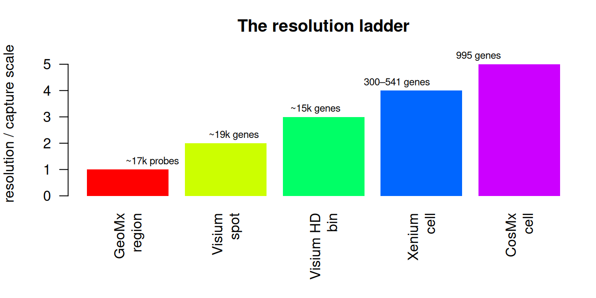

More than 100 human and mouse kidney spatial datasets were generated from 5 different platforms. To make these datasets comparable, we need to unify them into a single framework. The unification process involves several steps, each with its own considerations and trade-offs. Now let’s go through the unification process to see “how variable” the raw data looks like and “how it is unified”.

I organize the platforms into resolution tiers: GeoMx region → Visium spot (~55 µm) → Visium HD bin (8 µm) → Xenium/CosMx cell. Each tier is a different answer to the same question, “what is the kidney made of, and where?”, at a different granularity, and each tier trades resolution against coverage. The ladder is the conceptual spine of this analysis: every subsequent chapter climbs or descends it.
Making 128 samples comparable took four deliberate, documented steps, each of which leaves its trace in the data:
A canonical schema. Every sample was normalized
to one AnnData structure: raw counts in X, metadata and QC
in obs, spatial coordinates in
obsm['spatial'], and a resolution tier tag. A GeoMx ROI and
a CosMx cell now live in the same file format, clearly labeled.
A common coordinate frame, where the data allow it. Visium pixel coordinates were converted to microns using each sample’s embedded spot-diameter scale factor (px per 55 µm spot). Xenium and CosMx coordinates are already in microns. Visium HD pixels were treated as ≈1 µm/pixel, an approximation. The HD scale factor is not a reliable micron proxy, so HD spatial distances are approximate, and any cross-platform distance comparison involving HD is accordingly qualified.
A resolution tier per sample. GeoMx has no coordinates at all; it is ROI-level by construction. No amount of effort adds a spatial graph to a region profile.
A per-species pipeline. Mouse and human gene naming and biology differ; the two species were analyzed separately and meet only through module-level comparison.
The list above is the design, with which I utilized the AnnData and Scanpy stack to read every native format in the cohort (Space Ranger, Xenium, CosMx, GeoMx) and write it into the one schema.
Every design decision has a price, and this one is no different. I want to state the costs explicitly, because they bound what the rest of this analysis can claim:
Gene-level discovery is platform-confined. A gene not on a Xenium panel is invisible to the Xenium arm, no matter how important it is. The whole-transcriptome arms (Visium, Visium HD) carry the discovery weight; the panel arms carry the single-cell resolution.
Approximate HD scaling. As above, Visium HD coordinates are ≈1 µm/px. Fine for within-sample structure; coarse for cross-platform geometry.
GeoMx has no spatial graph. No neighborhoods, no domains, no diffusion; region-level scoring only. It participates in the atlas, but not in the spatial analyses.
Batch and species are real. Twenty-six human Visium samples come from different studies processed at different times; batch effects are present. The framework handles them where it can (integration with batch as a covariate) and reports them where it cannot.
The upshot is that unification buys the ability to ask biological questions across every platform at once, the goal of a systems-level analysis, at the price of confining gene-level discovery to the platforms that measured the genes. I consider this a favorable trade, and the rest of this analysis is the evidence for why it pays off.